일반기계기사 (2021-03-07 기출문제)
1과목: 재료역학
1. 길이 500mm, 지름 16mm의 균일한 강봉의 양 끝에 12kN의 축 방향 하중이 작용하여 길이는 300μm가 증가하고 지름은 2.4μm가 감소하였다. 이 선형 탄성 거동하는 봉 재료의 프와송 비는?
- 0.22
- 0.25
- 0.29
- 0.32
(정답률: 72%)

2. 지름 20mm인 구리합금 봉에 30kN의 축 방향 인장하중이 작용할 때 체적 변형률은 약 얼마인가? (단, 세로탄성계수는 100GPa, 프와송 비는 0.3 이다.)
- 0.38
- 0.038
- 0.0038
- 0.00038
(정답률: 52%)
3. 그림과 같이 균일단면 봉이 100kN의 압축하중을 받고 있다. 재료의 경사 단면 Z-Z에 생기는 수직응력 σn, 전단응력 τn의 값은 각각 몇 MPa 인가? (단, 균일 단면 봉의 단면적은 1000 mm2 이다.)
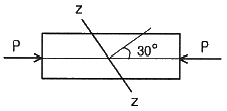
- σn = -38.2, τn = 26.7
- σn = -68.4, τn = 58.8
- σn = -75.0, τn = 43.3
- σn = -86.2, τn = 56.8
(정답률: 50%)
4. 단면계수가 0.01m3인 사각형 단면의 양단 고정보가 2m의 길이를 가지고 있다. 중앙에 최대 몇 kN의 집중하중을 가할 수 있는가? (단, 재료의 허용굽힘응력은 80MPa 이다.)
- 800
- 1600
- 2400
- 3200
(정답률: 34%)
5. 지름 6mm인 곧은 강선을 지름 1.2m의 원통에 감았을 때 강선에 생기는 최대 굽힘 응력은 약 몇 MPa 인가? (단, 세로탄성계수는 200GPa 이다.)
- 500
- 800
- 900
- 1000
(정답률: 27%)
6. 직사각형(b×h)의 단면적 A를 갖는 보에 전단력 V가 작용할 때 최대 전단응력은?
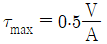
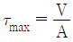
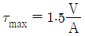
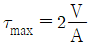
(정답률: 70%)
7. 그림에서 고정단에 대한 자유단의 전 비틀림각은? (단, 전단탄성계수는 100GPa 이다.)
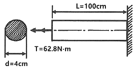
- 0.00025 rad
- 0.0025 rad
- 0.025 rad
- 0.25 rad
(정답률: 64%)
8. 그림과 같이 균일분포 하중을 받는 보의 지점 B에서의 굽힘모멘트는 몇 kN·m인가?
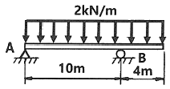
- 16
- 10
- 8
- 1.6
(정답률: 57%)
9. 두께 10mm인 강판으로 직경 2.5m의 원통형 압력용기를 제작하였다. 최대 내부 압력이 1200kPa 일 때 축방향 응력은 몇 MPa 인가?
- 75
- 100
- 125
- 150
(정답률: 55%)
10. 단면적이 각각 A1, A2, A3이고, 탄성계수가 각각 E1, E2, E3인 길이 ℓ인 재료가 강성판 사이에서 인장하중 P를 받아 탄성변형 했을 때 재료 1, 3 내부에 생기는 수직응력은? (단, 2개의 강성판은 항상 수평을 유지한다.)
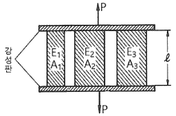
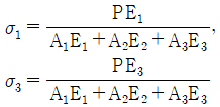
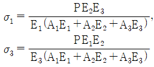
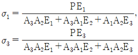
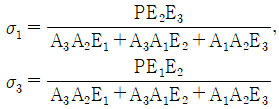
(정답률: 63%)
11. 지름 20mm, 길이 50mm의 구리 막대의 양단을 고정하고 막대를 가열하여 40℃ 상승했을 때 고정단을 누르는 힘은 약 몇 kN인가? (단, 구리의 선팽창계수 a=0.16×10-4/℃, 세로탄성계수는 110GPa 이다.)
- 52
- 30
- 25
- 22
(정답률: 66%)
12. 지름 10mm, 길이 2m 인 둥근 막대의 한끝을 고정하고 타단을 자유로이 10°만큼 비틀었다면 막대에 생기는 최대 전단응력은 약 몇 MPa 인가? (단, 재료의 전단탄성계수는 84GPa 이다.)
- 18.3
- 36.6
- 54.7
- 73.2
(정답률: 60%)
13. 지름이 2cm이고 길이가 1m인 원통형 중실기둥의 좌굴에 관한 임계하중을 오일러 공식으로 구하면 약 몇 kN인가? (단, 기둥의 양단은 회전단이고, 세로탄성계수는 200GPa 이다.)
- 11.5
- 13.5
- 15.5
- 17.5
(정답률: 63%)
14. 그림과 같이 등분포하중 w가 가해지고 B점에서 지지되어 있는 고정 지지보가 있다. A점에 존재하는 반력 중 모멘트는?
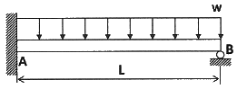
 (시계방향)
(시계방향)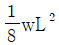
(반시계방향)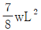
(시계방향)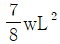
(반시계방향)
(정답률: 38%)
15. 그림과 같은 일단고정 타단지지보의 중앙에 P=4800N의 하중이 작용하면 지지점의 반력(RB)은 약 몇 kN인가?
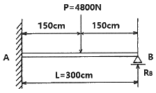
- 3.2
- 2.6
- 1.5
- 1.2
(정답률: 58%)
16. 반원 부재에 그림과 같이 0.5R지점에 하중 P가 작용할 때 지지점 B에서의 반력은?
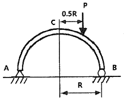
- P/4
- P/2
- 3P/4
- P
(정답률: 60%)
17. 두 변의 길이가 각각 b, h인 직사각형의 A점에 관한 극관성 모멘트는?
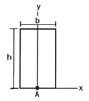
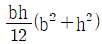
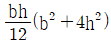
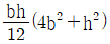
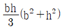
(정답률: 34%)
18. 상단이 고정된 원추 형체의 단위체적에 대한 중량을 γ라 하고 원추 밑면의 지름이 d, 높이가 ℓ일 때 이 재료의 최대 인장응력을 나타낸 식은? (단, 자중만을 고려한다.)
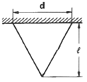
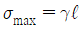
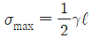
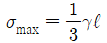
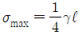
(정답률: 63%)
19. 보의 길이 ℓ에 등분포하중 w를 받는 직사각형 단순보의 최대 처짐량에 대한 설명으로 옳은 것은? (단, 보의 자중은 무시한다.)
- 보의 폭에 정비례한다.
- ℓ의 3승에 정비례한다.
- 보의 높이의 2승에 반비례한다.
- 세로탄성계수에 반비례한다.
(정답률: 66%)
20. 원통형 코일스프링에서 코일 반지름 R, 소선의 지름 d, 전단탄성계수를 G라고 하면 코일스프링 한 권에 대해서 하중 P가 작용할 때 소선의 비틀림 각 ø를 나타내는 식은?
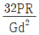
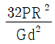
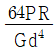
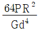
(정답률: 48%)
2과목: 기계열역학
21. 다음 중 가장 낮은 온도는?
- 104℃
- 284°F
- 410K
- 684R
(정답률: 60%)
22. 증기터빈에서 질량유량이 1.5kg/s 이고, 열손실률이 8.5kW이다. 터빈으로 출입하는 수증기에 대한 값은 아래 그림과 같다면 터빈의 출력은 약 몇 kW 인가?
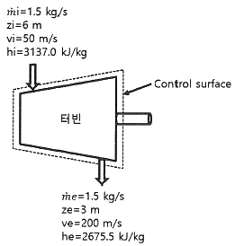
- 273 kW
- 656 kW
- 1357 kW
- 2616 kW
(정답률: 54%)
23. 온도 15℃, 압력 100kPa 상태의 체적이 일정한 용기 안에 어떤 이상 기체 5kg이 들어있다. 이 기체가 50℃가 될 때까지 가열되는 동안의 엔트로피 증가량은 약 몇 kJ/K인가? (단, 이 기체의 정압비열과 정적비열은 각각 1.001 kJ/(kg·K), 0.7171 kJ/(kg·K) 이다.)
- 0.411
- 0.486
- 0.575
- 0.732
(정답률: 55%)
24. 어떤 냉동기에서 0℃의 물로 0℃의 얼음 2ton을 만드는데 180 MJ의 일이 소요된다면 이 냉동기의 성적계수는? (단, 물의 융해열은 334 kJ/kg 이다.)
- 2.⑤
- 2.32
- 2.65
- 3.71
(정답률: 62%)
25. 계가 비가역 사이클을 이룰 때 클라우지우스(Clausius)의 적분을 옳게 나타낸 것은? (단, T는 온도, Q는 열량이다.)
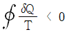
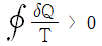
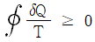
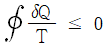
(정답률: 48%)
26. 비열비가 1.29, 분자량이 44인 이상 기체의 정압비열은 약 몇 kJ/(kg·K)인가? (단, 일반기체상수는 8.314 kJ/(kmol·K) 이다.)
- 0.51
- 0.69
- 0.84
- 0.91
(정답률: 64%)
27. 과열증기를 냉각시켰더니 포화영역 안으로 들어와서 비체적이 0.2327 m3/kg이 되었다. 이 때 포화액과 포화증기의 비체적이 각각 1.079×10-3 m3/kg, 0.5243 m3/kg 이라면 건도는 얼마인가?
- 0.964
- 0.772
- 0.653
- 0.443
(정답률: 62%)
28. 증기동력 사이클의 종류 중 재열사이클의 목적으로 가장 거리가 먼 것은?
- 터빈 출구의 습도가 증가하여 터빈 날개를 보호한다.
- 이론 열효율이 증가한다.
- 수명이 연장된다.
- 터빈 출구의 질(quality)을 향상시킨다.
(정답률: 52%)
29. 온도 20℃에서 계기압력 0.183 MPa의 타이어가 고속주행으로 온도 80℃로 상승할 때 압력은 주행 전과 비교하여 약 몇 kPa 상승하는가? (단, 타이어의 체적은 변하지 않고, 타이어 내의 공기는 이상기체로 가정하며, 대기압은 101.3 kPa 이다.)
- 37 kPa
- 58 kPa
- 286 kPa
- 445 kPa
(정답률: 44%)
30. 온도가 127℃, 압력이 0.5MPa, 비체적이 0.4m3/kg인 이상기체가 같은 압력 하에서 비체적이 0.3m3/kg으로 되었다면 온도는 약 몇 ℃가 되는가?
- 16
- 27
- 96
- 300
(정답률: 60%)
31. 수소(H2)가 이상기체라면 절대압력 1MPa, 온도 100℃에서의 비체적은 약 몇 m3/kg인가? (단, 일반기체상수는 8.3145 kJ/(kmol·K) 이다.)
- 0.781
- 1.26
- 1.55
- 3.46
(정답률: 64%)
32. 증기를 가역 단열과정을 거쳐 팽창시키면 증기의 엔트로피는?
- 증가한다.
- 감소한다.
- 변하지 않는다.
- 경우에 따라 증가도 하고, 감소도 한다.
(정답률: 59%)
33. 밀폐용기에 비내부에너지가 200 kJ/kg인 기체가 0.5kg 들어있다. 이 기체를 용량이 500W인 전기가열기로 2분 동안 가열한다면 최종상태에서 기체의 내부에너지는 약 몇 kJ 인가? (단, 열량은 기체로만 전달된다고 한다.)
- 20 kJ
- 100 kJ
- 120 kJ
- 160 kJ
(정답률: 54%)
34. 10℃에서 160℃까지 공기의 평균 정적비열은 0.7315 kJ/(kg·K)이다. 이 온도 변화에서 공기 1kg의 내부에너지 변화는 약 몇 kJ인가?
- 101.1 kJ
- 109.7 kJ
- 120.6 kJ
- 131.7 kJ
(정답률: 65%)
35. 한 밀폐계가 190 kJ의 열을 받으면서 외부에 20 kJ의 일을 한다면 이 계의 내부에너지의 변화는 약 얼마인가?
- 210 kJ 만큼 증가한다.
- 210 kJ 만큼 감소한다.
- 170 kJ 만큼 증가한다.
- 170 kJ 만큼 감소한다.
(정답률: 63%)
36. 완전가스의 내부에너지(u)는 어떤 함수인가?
- 압력과 온도의 함수이다.
- 압력만의 함수이다.
- 체적과 압력의 함수이다.
- 온도만의 함수이다.
(정답률: 53%)
37. 열펌프를 난방에 이용하려 한다. 실내 온도는 18℃이고, 실외 온도는 –15℃이며 벽을 통한 열손실은 12kW 이다. 열펌프를 구동하기 위해 필요한 최소 동력은 약 몇 kW 인가?
- 0.65 kW
- 0.74 kW
- 1.36 kW
- 1.53 kW
(정답률: 48%)
38. 이상적인 카르노 사이클의 열기관이 500℃인 열원으로부터 500kJ을 받고, 25℃에 열을 방출한다. 이 사이클의 일(W)과 효율(ηth)은 얼마인가?
- W = 307.2kJ, ηth = 0.6143
- W = 307.2kJ, ηth = 0.5748
- W = 250.3kJ, ηth = 0.6143
- W = 250.3kJ, ηth = 0.5748
(정답률: 63%)
39. 오토사이클의 압축비(ε)가 8일 때 이론열효율은 약 몇 % 인가? (단, 비열비(k)는 1.4이다.)
- 36.8%
- 46.7%
- 56.5%
- 66.6%
(정답률: 65%)
40. 계가 정적 과정으로 상태 1에서 상태 2로 변화할 때 단순압축성 계에 대한 열역학 제1법칙을 바르게 설명한 것은? (단, U, Q, W는 각각 내부에너지, 열량, 일량이다.)
- U1 - U2 = Q12
- U2 - U1 = W12
- U1 - U2 = W12
- U2 - U1 = Q12
(정답률: 54%)
3과목: 기계유체역학
41. 유체역학에서 연속방정식에 대한 설명으로 옳은 것은?
- 뉴턴의 운동 제2법칙이 유체 중의 모든 점에서 만족하여야 함을 요구한다.
- 에너지와 일 사이의 관계를 나타낸 것이다.
- 한 유선 위에 두 점에 대한 단위 체적당의 운동량의 관계를 나타낸 것이다.
- 검사체적에 대한 질량 보존을 나타내는 일반적인 표현식이다.
(정답률: 43%)
42. 그림과 같은 탱크에서 A 점에 표준대기압이 작용하고 있을 때, B점의 절대압력은 약 몇 kPa 인가? (단, A점과 B점의 수직거리는 2.5m 이고 기름의 비중은 0.92이다.)
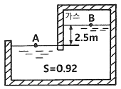
- 78.8
- 788
- 179.8
- 1798
(정답률: 55%)
43. 기준면에 있는 어떤 지점에서의 물의 유속이 6m/s, 압력이 40kPa일 때 이 지점에서의 물의 수력기울기선의 높이는 약 몇 m 인가?
- 3.24
- 4.08
- 5.92
- 6.81
(정답률: 36%)
44. 2차원 직각좌표계(x, y) 상에서 x방향의 속도 u = 1, y방향의 속도 v = 2x인 어떤 정상상태의 이상유체에 대한 유동장이 있다. 다음 중 같은 유선 상에 있는 점을 모두 고르면?
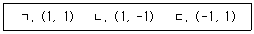
- ㄱ, ㄴ
- ㄴ, ㄷ
- ㄱ, ㄷ
- ㄱ, ㄴ, ㄷ
(정답률: 35%)
45. 경계층의 박리(separation)가 일어나는 주 원인은?
- 압력이 증기압 이하로 떨어지기 때문에
- 유동방향으로 밀도가 감소하기 때문에
- 경계층의 두께가 0으로 수렴하기 때문에
- 유동과정에 역압력 구배가 발생하기 때문에
(정답률: 64%)
46. 표면장력이 0.07N/m인 물방울의 내부압력이 외부압력보다 10Pa 크게 되려면 물방울의 지름은 몇 cm 인가?
- 0.14
- 1.4
- 0.28
- 2.8
(정답률: 49%)
47. 가스 속에 피토관을 삽입하여 압력을 측정하였더니 정체압이 128Pa, 정압이 120Pa 이었다. 이 위치에서의 유속은 몇 m/s 인가? (단, 가스의 밀도는 1.0 kg/m3 이다.)
- 1
- 2
- 4
- 8
(정답률: 48%)
48. 평면 벽과 나란한 방향으로 점성계수가 2×10-5 Pa·s인 유체가 흐를 때, 평면과의 수직거리 y[m]인 위치에서 속도가 u = 5(1-e-0.2y)[m/s]이다. 유체에 걸리는 최대 전단응력은 약 몇 Pa 인가?
- 2×10-5
- 2×10-6
- 5×10-6
- 10-4
(정답률: 46%)
49. 안지름 1cm인 원관 내를 유동하는 0℃의 물의 층류 임계 레이놀즈수가 2100일 때 임계속도는 약 몇 cm/s인가? (단, 0℃ 물의 동점성계수는 0.01787 cm2/s 이다.)
- 37.5
- 375
- 75.1
- 751
(정답률: 59%)
50. 다음 중 정체압의 설명으로 틀린 것은?
- 정체압은 정압과 같거나 크다.
- 정체압은 액주계로 측정할 수 없다.
- 정체압은 유체의 밀도에 영향을 받는다.
- 같은 정압의 유체에서는 속도가 빠를수록 정체압이 커진다.
(정답률: 47%)
51. 어떤 물체가 대기 중에서 무게는 6N이고 수중에서 무게는 1.1N이었다. 이 물체의 비중은 약 얼마인가?
- 1.1
- 1.2
- 2.4
- 5.5
(정답률: 37%)
52. 지름 4m의 원형수문이 수면과 수직방향이고 그 최상단이 수면에서 3.5m만큼 잠겨있을대 수문에 작용하는 힘 F와, 수면으로부터 힘의 작용점까지의 거리 x는 각각 얼마인가?
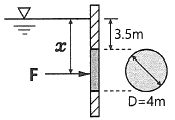
- 638kN, 5.68m
- 677kN, 5.68m
- 638kN, 5.57m
- 677kN, 5.57m
(정답률: 48%)
53. 지름 D1=30cm의 원형 물제트가 대기압 상태에서 V의 속도로 중앙부분에 구멍이 뚫린 고정 원판에 충돌하여, 원판 뒤로 지름 D2=10cm의 원형 물제트가 같은 속도로 흘러나가고 있다. 이 원판의 받는 힘이 100N이라면 물제트의 속도 V는 약 몇 m/s 인가?
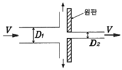
- 0.95
- 1.26
- 1.59
- 2.35
(정답률: 42%)
54. 길이 600m이고 속도 15km/h인 선박에 대해 물속에서의 조파 저항을 연구하기 위해 길이 6m인 모형선의 속도는 몇 km/h으로 해야 하는가?
- 2.7
- 2.0
- 1.5
- 1.0
(정답률: 64%)
55. 동점성계수가 1×10-4 m2/s인 기름이 안지름 50mm의 관을 3m/s의 속도로 흐를 때 관의 마찰계수는?
- 0.015
- 0.027
- 0.043
- 0.061
(정답률: 56%)
56. 일률(power)을 기본 차원인 M(질량), L(길이), T(시간)로 나타내면?
- L2T-2
- MT-2L-1
- ML2T-2
- ML2T-3
(정답률: 49%)
57. 수평으로 놓은 지름 10cm, 길이 200m 인 파이프에 완전히 열린 글로브 밸브가 설치되어 있고, 흐르는 물의 평균속도는 2m/s 이다. 파이프의 관 마찰계수는 0.02이고, 전체 수두 손실이 10m 이면, 글로브 밸브의 손실계수는 약 얼마인가?
- 0.4
- 1.8
- 5.8
- 9.0
(정답률: 43%)
58. 유동장에 미치는 힘 가운데 유체의 압축성에 의한 힘만이 중요할 때에 적용할 수 있는 무차원수로 옳은 것은?
- 오일러수
- 레이놀즈수
- 프루드수
- 마하수
(정답률: 31%)
59. (x, y)좌표계의 비회전 2차원 유동장에서 속도포텐셜(potential) ø는 ø = 2x2y 로 주어졌다. 이 때 점(3, 2)인 곳에서 속도 벡터는? (단, 속도포텐셜 ø는
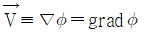
로 정의된다.)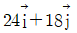
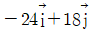
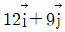
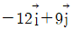
(정답률: 55%)
60. Stokes의 법칙에 의해 비압축성 점성유체에 구(sphere)가 낙하될 때 항력(D)을 나타낸 식으로 옳은 것은? (단, μ : 유체의 점성계수, a : 구의 반지름, V : 구의 평균속도, CD : 항력계수, 레이놀즈수가 1보다 작아 박리가 존재하지 않는다고 가정한다.)
- D = 6πaμV
- D = 4πaμV
- D = 2πaμV
- D = CDπaμV
(정답률: 55%)
4과목: 기계재료 및 유압기기
61. 과냉 오스테나이트 상태에서 소성가공을 한 다음 냉각하여 마텐자이트화하는 열처리 방법은?
- 오스포밍
- 크로마이징
- 심랭처리
- 인덕션하드닝
(정답률: 40%)
62. 다음 중 열경화성 수지가 아닌 것은?
- 페놀 수지
- ABS 수지
- 멜라민 수지
- 에폭시 수지
(정답률: 52%)
63. Fe-Fe3C계 평형 상태도에서 나타날 수 있는 반응이 아닌 것은?
- 포정반응
- 공정반응
- 공석반응
- 편정반응
(정답률: 60%)
64. 가열 과정에서 순철의 A3변태에 대한 설명으로 틀린 것은?
- BCC가 FCC로 변한다.
- 약 910℃ 부근에서 일어난다.
- α-Fe 가 γ-Fe로 변화한다.
- 격자구조에 변화가 없고 자성만 변한다.
(정답률: 59%)
65. 표점거리가 100mm, 시험편의 평행부 지름이 14mm인 인장 시험편을 최대하중 6400kgf로 인장한 후 표점거리가 120mm로 변화 되었을 때 인장강도는 약 몇 kgf/mm2 인가?
- 10.4 kgf/mm2
- 32.7 kgf/mm2
- 41.6 kgf/mm2
- 166.3 kgf/mm2
(정답률: 57%)
66. 주철의 성질에 대한 설명으로 옳은 것은?
- C, Si 등이 많을수록 용융점은 높아진다.
- C, Si 등이 많을수록 비중은 작아진다.
- 흑연편이 클수록 자기 감응도는 좋아진다.
- 주철의 성장 원인으로 마텐자이트의 흑연화에 의한 수축이 있다.
(정답률: 46%)
67. 마텐자이트(martensite) 변태의 특징에 대한 설명으로 틀린 것은?
- 마텐자이트는 고용체의 단일상이다.
- 마텐자이트 변태는 확산 변태이다.
- 마텐자이트 변태는 협동적 원자운동에 의한 변태이다.
- 마텐자이트의 결정 내에는 격자결함이 존재한다.
(정답률: 49%)
68. Al-Cu-Ni-Mg 합금으로 시효경화하며, 내열합금 및 피스톤용으로 사용되는 것은?
- Y 합금
- 실루민
- 라우탈
- 하이드로날륨
(정답률: 55%)
69. 냉간압연 스테인리스강판 및 강대(KSD 3698)에서 석출경화계 종류의 기호로 옳은 것은?
- STS3⑤
- STS410
- STS430
- STS630
(정답률: 29%)
70. 구리 및 구리합금에 대한 설명으로 옳은 것은?
- Cu+Sn 합금을 황동이라 한다.
- Cu+Zn 합금을 청동이라 한다.
- 문쯔메탈(muntz metal)은 60%Cu + 40%Zn 합금이다.
- Cu의 전기 전도율은 금속 중에서 Ag보다 높고, 자성체이다.
(정답률: 56%)
71. 개스킷(gasket)에 대한 설명으로 옳은 것은?
- 고정부분에 사용되는 실(seal)
- 운동부분에 사용되는 실(seal)
- 대기로 개방되어 있는 구멍
- 흐름의 단면적을 감소시켜 관로 내 저항을 갖게 하는 기구
(정답률: 62%)
72. 자중에 의한 낙하, 운동물체의 관성에 의한 액추에이터의 자중 등을 방지하기 위해 배압을 생기게 하고 다른 방향의 흐름이 자유로 흐르도록 한 밸브는?
- 풋 밸브
- 스풀 밸브
- 카운터 밸런스 밸브
- 변환 밸브
(정답률: 68%)
73. 유압에서 체적탄성계수에 대한 설명으로 틀린 것은?
- 압력의 단위와 같다.
- 압력의 변화량과 체적의 변화량은 관계있다.
- 체적탄성계수의 역수는 압축률로 표현한다.
- 유압에 사용되는 유체가 압축되기 쉬운 정도를 나타낸 것으로 체적탄성계수가 클수록 압축이 잘 된다.
(정답률: 55%)
74. 오일의 팽창, 수축을 이용한 유압 응용장치로 적절하지 않은 것은?
- 진동 개폐 밸브
- 압력계
- 온도계
- 쇼크 업소버
(정답률: 39%)
75. 그림과 같은 유압회로의 명칭으로 적합한 것은?
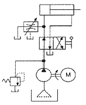
- 어큐뮬레이터 회로
- 시퀀스 회로
- 블리드 오프 회로
- 로킹(로크) 회로
(정답률: 41%)
76. 토출량이 일정한 용적형 펌프의 종류가 아닌 것은?
- 기어 펌프
- 베인 펌프
- 터빈 펌프
- 피스톤 펌프
(정답률: 45%)
77. 유압 모터의 효율에 대한 설명으로 틀린 것은?
- 전효율은 체적효율에 비례한다.
- 전효율은 기계효율에 반비례한다.
- 전효율은 축 출력과 유체 입력의 비로 표현한다.
- 체적효율은 실제 송출유량과 이론 송출유량의 비로 표현한다.
(정답률: 49%)
78. 펌프의 효율을 구하는 식으로 틀린 것은? (단, 펌프에 손실이 없을 때 토출 압력은 P0, 실제 펌프 토출 압력은 P, 이론 펌프 토출량은 Q0, 실제 펌프 토출량은 Q, 유체동력은 Lh, 축동력은 Ls이다.)
- 용적효율 =
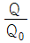
- 압력효율 =
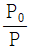
- 기계 효율 =
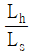
- 전 효율 = 용적 효율×압력 효율×기계 효율
(정답률: 49%)
79. 그림과 같은 기호의 밸브 명칭은?
- 스톱 밸브
- 릴리프 밸브
- 체크 밸브
- 가변 교축 밸브
(정답률: 66%)
80. 압력 제어 밸브에서 어느 최소 유량에서 어느 최대 유량까지의 사이에 증대하는 압력은?
- 오버라이드 압력
- 전량 압력
- 정격 압력
- 서지 압력
(정답률: 53%)
5과목: 기계제작법 및 기계동력학
81. 강체의 평면운동에 대한 설명으로 틀린 것은?
- 평면운동은 병진과 회전으로 구분할 수 있다.
- 평면운동은 순간중심점에 대한 회전으로 생각할 수 있다.
- 순간중심점은 위치가 고정된 점이다.
- 곡선경로를 움직이더라도 병진운동이 가능하다.
(정답률: 46%)
82. 자동차 B, C가 브레이크가 풀린 채 정지하고 있다. 이때 자동차 A가 1.5m/s의 속력으로 B와 충돌하면, 이후 B와 C가 다시 충돌하게 되어 결국 3대의 자동차가 연쇄 충돌하게 된다. 이때 B와 C가 충돌한 직후 자동차 C의 속도는 약 몇 m/s인가? (단, 모든 자동차 간 반발계수는 e=0.75이고, 모든 자동차는 같은 종류로 질량이 같다.)
- 0.16
- 0.39
- 1.15
- 1.31
(정답률: 43%)
83. 질량 m=100kg인 기계가 강성계수 k=1000kN/m, 감쇠비 ξ=0.2인 스프링에 의해 바닥에 지지되어 있다. 이 기계에 F=485sin(200t)N의 가진력이 작용하고 있다면 바닥에 전달되는 힘은 약 몇 N 인가?
- 100
- 200
- 300
- 400
(정답률: 23%)
84. 그림과 같은 진동시스템의 운동방정식은?
(정답률: 45%)
85. 20g의 탄환이 수평으로 1200m/s이 속도로 발사되어 정지해 있던 300g의 블록에 박힌다. 이후 스프링에 발생한 최대 압축 길이는 약 몇 m 인가? (단, 스프링상수는 200N/m 이고 처음에 변형되지 않은 상태였다. 바닥과 블록 사이의 마찰은 무시한다.)
- 2.5
- 3.0
- 3.5
- 4.0
(정답률: 39%)
86. 북극과 남극이 일직선으로 관통된 구멍을 통하여, 북극에서 지구 내부를 향하여 초기속도 vo=10m/s로 한 질점을 던졌다. 그 질점이 A점(S=R/2)을 통과할 때의 속력은 약 몇 km/s 인가? (단, 지구내부는 균일한 물질로 채워져 있으며, 중력가속도는 O점에서 0이고, O점으로 부터의 위치 S에 비례한다고 가정한다. 그리고 지표면에서 중력가속도는 9.8m/s2, 지구 반지름은 R=6371km 이다.)
- 6.84
- 7.90
- 8.44
- 9.81
(정답률: 24%)
87. 진동수(f), 주기(T), 각진동수(ω)의 관계를 표시한 식으로 옳은 것은?
(정답률: 54%)
88. 물체의 위치가 x가 x = 6t2 - t3[m]로 주어졌을 때 최대 속도의 크기는 몇 m/s인가? (단, 시간의 단위는 초이다.)
- 10
- 12
- 14
- 16
(정답률: 56%)
89. 경사면에 질량 M의 균일한 원기둥이 있다. 이 원기둥에 감겨 있는 실을 경사면과 동일한 방향인 위쪽으로 잡아당길 때, 미끄럼이 일어나지 않기 위한 실의 장력 T의 조건은? (단, 경사면의 각도는 α, 경사면과 원기둥사이의 마찰계수를 μs, 중력가속도를 g라 한다.)
- T ≤ Mg(3μssinα + cosα)
- T ≤ Mg(3μssinα - cosα)
- T ≤ Mg(3μscosα + sinα)
- T ≤ Mg(3μscosα - sinα)
(정답률: 28%)
90. 직선 진동계에서 질량 98kg의 물체가 16초간에 10회 진동하엿다. 이 진동계의 스프링 상수는 몇 N/cm 인가?
- 37.8
- 15.1
- 22.7
- 30.2
(정답률: 35%)
91. 용접부의 시험검사 방법 중 파괴시험에 해당하는 것은?
- 외관시험
- 초음파 탐상시험
- 피로시험
- 음향시험
(정답률: 62%)
92. 담금질된 강의 마텐자이트 조직은 경도는 높지만 취성이 매우 크고 내부적으로 잔류응력이 많이 남아 있어서 A1 이하의 변태점에서 가열하는 열처리 과정을 통하여 인성을 부여하고 잔류응력을 제거하는 열처리는?
- 풀림
- 불림
- 침탄법
- 뜨임
(정답률: 49%)
93. 방전가공의 특징으로 틀린 것은?
- 무인가공이 불가능하다.
- 가공 부분에 변질층이 남는다.
- 전극의 형상대로 정밀하게 가공할 수 있다.
- 가공물의 경도와 관계없이 가공이 가능하다.
(정답률: 41%)
94. 단체모형, 분할모형, 조립모형의 종류를 포괄하는 실제 제품과 같은 모양의 모형은?
- 고르게 모형
- 회전 모형
- 코어 모형
- 현형
(정답률: 59%)
95. 압연에서 롤러의 구동은 하지 않고 감는 기계의 인장 구동으로 압연을 하는 것으로 연질재의 박판 압연에 사용되는 압연기는?
- 3단 압연기
- 4단 압연기
- 유성 압연기
- 스테켈 압연기
(정답률: 44%)
96. 압연가공에서 가공 전의 두께가 20mm이던 것이 가공 후의 두께가 15mm로 되었다면 압하율은 몇 % 인가?
- 20
- 25
- 30
- 40
(정답률: 64%)
97. 스프링 등과 같은 기계요소의 피로강도를 향상시키기 위해 작은 강구를 공작물의 표면에 충돌시켜서 가공하는 방법은?
- 숏 피닝
- 전해가공
- 전해연삭
- 화학연마
(정답률: 64%)
98. 브라운샤프형 분할대로 의 각도를 분할할 때, 분할 크랭크의 회전을 어떻게 하면 되는가?
- 27구멍 분할판으로 14구멍씩
- 18구멍 분할판으로 11구멍씩
- 21구멍 분할판으로 7구멍씩
- 24구멍 분할판으로 15구멍씩
(정답률: 51%)
99. 전기 아크용접에서 언더컷의 발생 원인으로 틀린 것은?
- 용접속도가 너무 빠를 때
- 용접전류가 너무 높을 때
- 아크길이가 너무 짧을 때
- 부적당한 용접봉을 사용했을 때
(정답률: 40%)
100. 절삭가공 시 발생하는 절삭온도 측정방법이 아닌 것은?
- 부식을 이용하는 방법
- 복사고온계를 이용하는 방법
- 열전대에 의한 방법
- 칼로리미터에 의한 방법
(정답률: 58%)
$$
frac{Deltasigma}{sigma} = frac{Delta L}{L} + frac{Delta d}{d} approx frac{Delta L}{L}
$$
여기서 $Deltasigma$는 응력의 증가량, $sigma$는 초기 응력, $Delta L$은 길이의 증가량, $L$은 초기 길이, $Delta d$는 지름의 감소량, $d$는 초기 지름을 나타낸다.
주어진 값으로 계산하면,
$$
frac{Delta L}{L} = frac{300mutext{m}}{500text{mm}} = 0.0006
$$
따라서, 프와송 비는 다음과 같이 계산된다.
$$
nu = frac{Deltasigma/sigma}{Delta L/L} approx frac{0.0006}{1} = 0.0006 approx 0.25
$$
따라서, 정답은 "0.25"이다.